OpenStudio Results Measure
Measure Overview
In OpenStudio 1.8.1 and later this measure replaces the monthly end use overview as the default measure on any simulation. You don't have to add it to your workflow, it just runs. This measure creates high level tables and charts pulling both from model inputs and EnergyPlus results, all data is in IP units. It has building level information as well as detail on space types, thermal zones, HVAC systems, envelope characteristics, and economics. Click the heading above a chart to view a table of the chart data. If you have OpenStudio 1.7.5 or later, you can also download a copy of this from the BCL, however offline viewing of charts within the OpenStudio Application requires 1.8.1 or later. If you are viewing the report through a web browser you won't see charts if you are offline, but you will still see tables. While the report generally uses high level model data or tabular results, a few sections do request hourly or monthly time-series data. This applies to the HVAC Load Profiles and Zone Conditions sections.
Above: This video demonstrates the 1.9.0 Release with the Reporting Measure.
The report is broken down into 21 sections which can be navigated using the table of contents at the left side of the report. If the table of contents and the main body of the report start to overlap with each other, increase the width of your application or web browser window. Each section has one or moore tables or charts. Be default where there is a chart, table data is hidden, but you can expand it by clicking on the blue title above the chart that says "view table". If there is no data for a section, the header for the section will still show but you will see a message that says "No Data to Show for ...". For some tables or charts within a section the table may be hidden if there isn't any content. This is true for example for Renewable Energy Source Summary in Model Summary, Fuel Tables in Monthly Overview, and Thermal Zones in Zone Equipment Detail.
As this measure develops more data may be added to specific sections and new sections may be added, but we don't want this to be an all purpose measure. It is meant to provide general data that you would typically want on any simulation. If you want to trouble shoot specific aspects of your model or have use case or specific reporting requirements, you can add additional reporting measures to the workflow. As described in the "Developing Your Own Reporting Measures" section below, we hope both internally and externally to see the same framework and charting libraries used as much as possible. This will provide a more consistent experience for users and measure writers.
The rest of this section describes the specific sections of the current version of the measure.
Model Summary
This section provides quick access to high level information about your model such as the building area and the Energy Use Intensity (EUI). It includes tables for Building Summary, Weather Summary Sizing Period Design Days, Unmet Hours Summary, and Renewable Energy Source Summary.
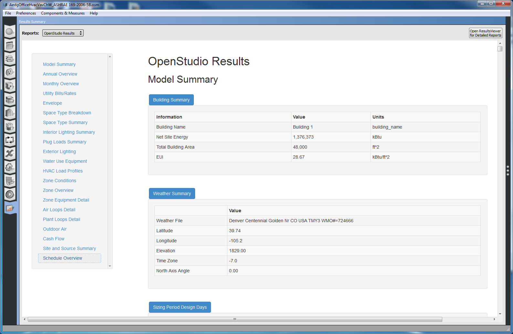
Above: First few tables in Model Summary section.
Annual Overview
This section consists of a number of pie charts that break down annual consumption by end use, fuel or both. The chart legend is sorted for largest (top) to smallest (bottom) and only shows end uses or fuels which ar used in the model. The end use and fuel color keys are consistent with charts in other sections of the report. As is typical in chart throughout the report, hovering over chart elements provides additional information.

Above: First few charts in Annual Summary section.
Monthly Overview
This section is most like what the previous default report looked like. It has consumption charts by month, fuel, and end use. It will create charts as needed based on fuel types used in the model. This includes district heating and cooling. In addition to monthly consumption breakdown, there are also charts for monthly demand by fuel. The end uses shown in the demand charts are the value of that end use at peak demand for that fuel. Keep in mind that this may not represent the monthly peak load for that end use by itself, it is just a snapshot at the monthly peak demand for that fuel.

Above: Monthly Electricity Consumption table.
Utility Bills/Rates
This section includes a table showing average utility rate by fuel as well as a table that shows process and total energy costs by fuel. Note that on both tables the "Other" row includes water; as a result when you have added a cost to watter as a fuel the average rate value and units don't make sense for the "Other" row. They can be ignored.

Above: Utility Bills/Rates tables.
Envelope
This section lists constructions used for base and sub surfaces in the model along with the area, surface count, and R value or U-Factor for the construction. This data comes from the OpenStudio model, however the orientation specific window-wall ratios and skylight-roof ratio come from the EnergyPlus results.
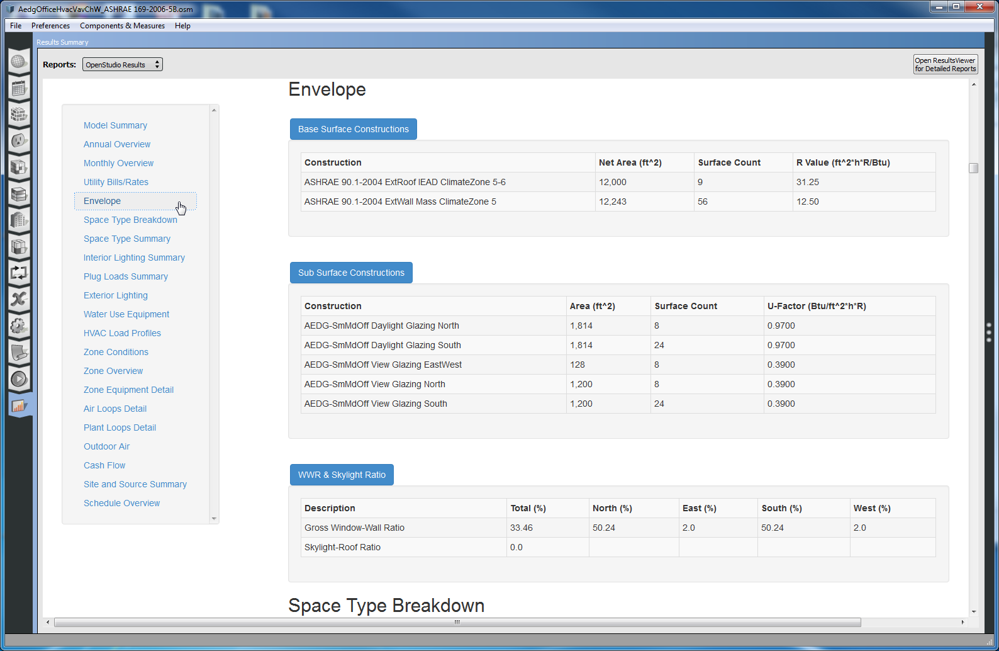
Above: Envelope tables.
Space Type Breakdown
This chart is generated from the OpenStudio model. If you expand the table or hover over pie chart sections you can see the floor area in the model accounted for by each space type. If you have spaces in your model that don't have a space type assigned, they will show under a heading of "No Space Type Assigned". This accounts for zone multipliers. If you have spaces in your model that are not included in a thermal zone you may have unexpected results.
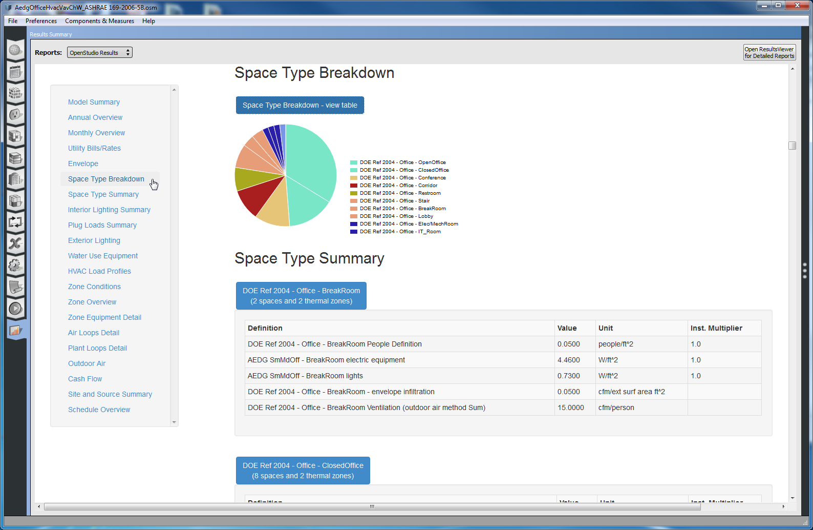
Above: Space Type Breakdown chart and first Space Type Summary table.
Space Type Summary
These tables provide detail on internal loads for each of the space types used in the model. This includes loads such as people, lights, and electric and gas equipment, as well as internal mass, outdoor air requirements, infiltration. Currently Water Use Equipment isn't part of a space type and doesn't show on these tables. There is a separate section for water use equipment. If you have multiple instances of a specific load type such as lights, each instance will each be listed individually vs. having a lighting total for the space type.
Note that loads assigned directly to a space don't show anywhere in this section. This would occur for all loads in a space when there is no space type assigned, and can also occur when a space type is assigned to a space, but the space also has additional loads assigned to it, beyond what it inherits from the space type.
Interior Lighting Summary
This section contains one table that lists all lighting instances in the model by thermal zone. This comes from EnergyPlus post simulation. As a result we can include "Actual Load Hours/Week" and "Consumption". Actual load horus per week account for reductions due to daylight controls. Additional information such as schedule name and return air fraction are included. This can be a very long table on a large model. For convince you can click the blue heading to collapse a table, but you can also use teh left navigation to skip past it.

Above: Interior Lighting Summary table.
Plug Loads Summary
The Plug Loads summary section is similar to Interior Lighting Summary in that it lists all plug loads, however it only shows the instance name and the consumption. There are separate tables for electric equipment and gas equipment, if both types of loads exist in the model.
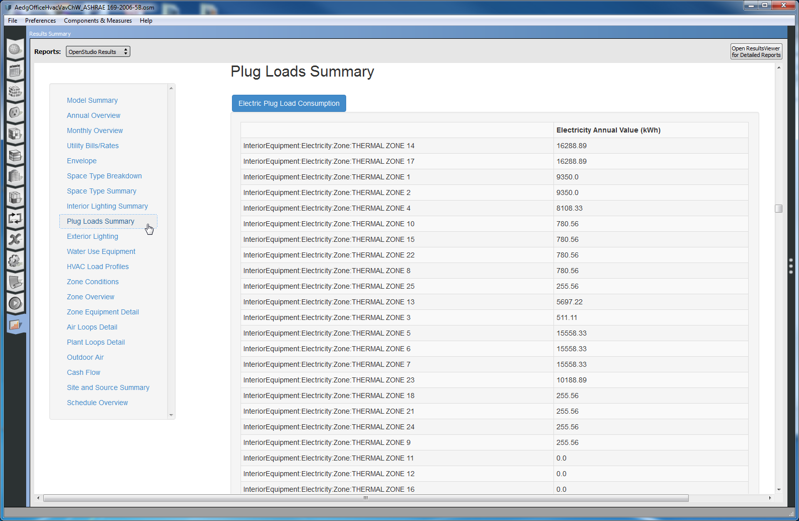
Above: Plug Loads Summary table.
Exterior Lighting
This section has a single table that last all exterior lights objects in the model along with their power and consumption. As this comes from the EnergyPlus results consumption accounts for schedules adjusted for an astronomical clock.
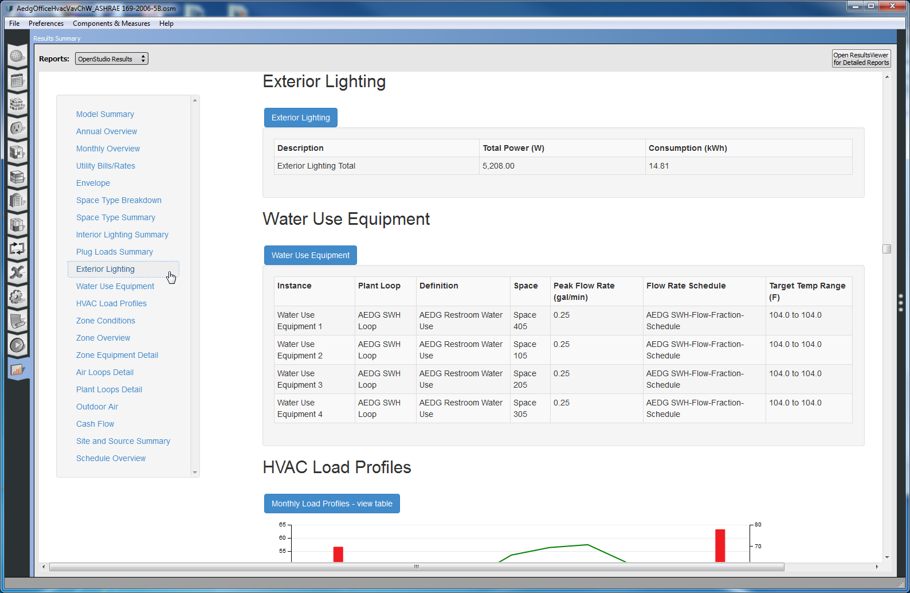
Above: Exterior Lighting and Water Use Equipment section.
Water Use Equipment
The water use equipment table lists all water use equipment objects in the model. This comes from the model, so it doesn't provide consumption but it does identify the service water heating loop, the load definition, the space the equipment is in, along with the peak flow rate, flow rate schedule, and the target temperature range. In a number of places in this reporting measure where an object refers to a temperature schedule or schedules, a range of values is listed vs. the name of the schedules. This allows for quick validation of reasonable values.
HVAC Load Profiles
This measures overlays monthly heating and cooling demand, that we saw earlier in the Monthly Overview section with the monthly average outdoor dry bulb temperature. This is the first section in the measure that requires time series output, although in this case just the monthly values for one variable (dry bulb temperature).
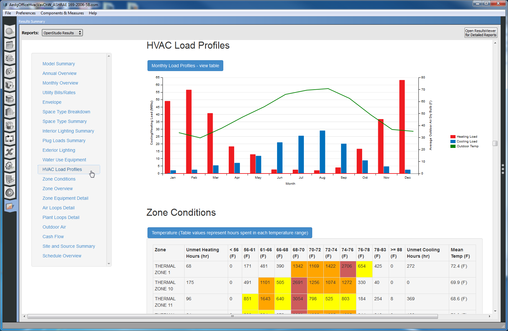
Above: HVAC Load Profiles chart.
Zone Conditions
The zone conditions section has two tables. Both tables list all of the zones in the model and break down the hours of the simulation that are spent in a specific value range. The first table catagories hours of simulation (8760 if running a full year) by temperature ranges in 5 degree(F) bins. Additionally the number of hours heating and cooling setpoints are not met are also shown, along with the mean zone temperature. The unmet hours and mean temperature include both occupied and unoccupied hours.
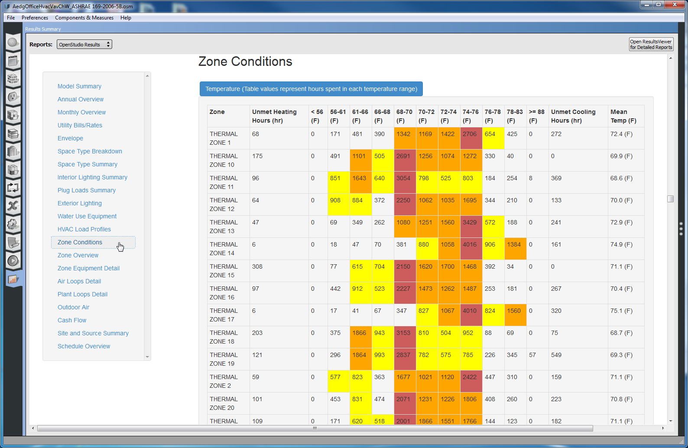
Above: Zone Conditions - Temperature table.
The second table shows relative humidity in 5% bins, along with mean relative humidity for each zone. In both cases the table cells are color coded to make it easier to quickly can over. Cells with under 500 hours are not colored. Cells with more than 500 hours are yellow. More than 1000 hours - orange. More than 200 hours - red.

Above: Zone Conditions - Humidity Table.
Zone Overview
This section gives an overview of zone geometry and internal loads. It also identifies if a zone is conditioned, is part of the flor area, and what its zone multiplier is.

Above: Zone Overview section.
Zone Equipment Detail
This section lists creates a table for each thermal zone that has zone equipment, other than a terminal. Each table lists all zone equipment except for terminals, information on terminal types used can be found in the Air Loops Details section. For some types of equipment we list additional information, for others we just list the object type. Over time we will provide more information on additional object types. This is also true for the Air Loops and Plant Loops Detail sections.

Above: Zone Equipment section.
Air Loops Detail
This section has a table for each air loop in the model. Each table is broken down into supply, demand, and controls sub-tables. The demand supply section lists objects on the supply side of the air loop. As with Zone Equipment Detail section, some objects have additional information listed, other objects just list the class of object. The demand section summaries the number of zones on the air loop along with the floor area of those thermal zones, the range of thermostat setpoint values for both heating and cooling, and a list of the types of terminals used on the air loop. The controls sub-table provides high level controls information about the air loop.

Above: First table in Air Loops Detail section.
Plant Loops Detail
This section has a table for each plant loop in the model. It is organized very much like the Air Loops Detail section. The demand section of the plant loop summary will list thermal zones, air loops or other plant loops that are on the demand side of the loop. In addition to loops that condition the building, loops providing service water heating will also appear hear.
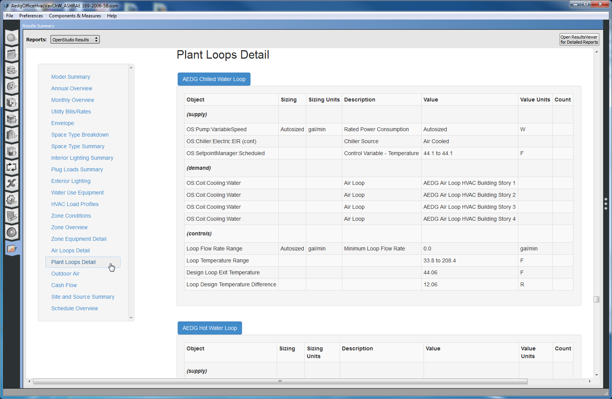
Above: First table in Plant Loops Detail section.
Outdoor Air
This section has a table that lists the number of occupants and volume of each zone along with the average and minimum values for mechanical ventilation and infiltration.

Above: Outdoor Air section.
Cash Flow
This section shows the cash flow over the analysis period for your project, which defaults to 25 years. You wont see any data in this section unless you have added lifecycle costs and or utility rates to your model. As with other charts you can hover over chart data or click the blue heading above the chart to view precise value in tabular form.
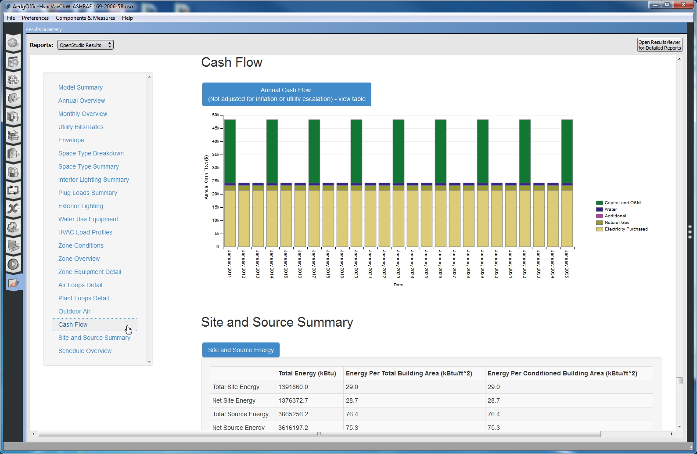
Above: Cash Flow chart.
Site and Source Summary
This section has two tables. The lists total and net values for both site and source energy. The second table lists the site to source conversion factors by fuel to calculate values in the first table.

Above: Site and Source Summary section.
Schedule Overview
This section provides a small chart for each schedule used in the model. This looks very much like what you can see in the Schedule Tab of the OpenStudio application except that all of the possible day profiles for a schedule are overlaid on each other. Rules are listed by their priority with a description for the days of teh week and dates of the year they are applicable. The colors for the default profile adn rules match what is used in the application. You can expand the table for this section to see the use count for each schedule.

Above: Schedule Overview charts.
Measure Arguments
If you are running this report in OpenStudio 8.1 or later all sections are automatically shown. If you add it to the workflow then user arguments will become visible. For this measure there is a check box for each section to determine if you want to generate that section or not. You could use this to create a streamline report with only the sections are are interested visible. If you disable sections that request time-series data, then those output variables wont' be requested, resulting in a smaller SQL file. Since most sections in this report only request tabular data, it won't affect much, but for other future reports this coudl be more useful. The Zone Conditions section requests hourly zone temperature and humidity values and the HVAC Load Profiles section requests monthly outdoor air dry bulb temperatures.
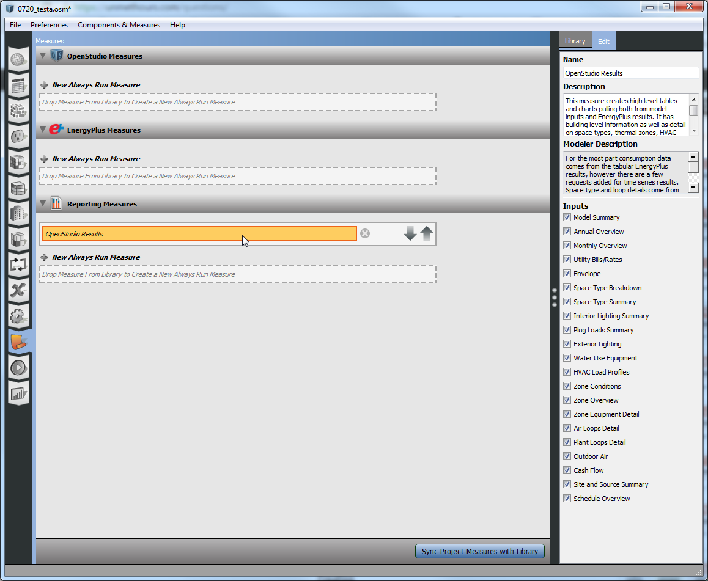
Above: View of Arguments in OpenStudio Results measure.
Developing Your Own Reporting Measures
This measure was created to fill a need in providing easy access to more detailed model and simulation results data, but it serves another role as well. It was created in a way that was very easy to use as a template for custom user reports. We setup a framework and added support for a variety of chart types. The only coding required to make your own custom report is to provide the data. While we have a separate Measure Writing Guide in our documentation, it seemed fitting to explain here how you would add your own tables and charts to this report, or to create a new clean report.
The first step is to gather the data you want in a table or chart. This could be simulation results, model inputs, or even just hard coded table as in this example. It could also be read in from a text file. In the "resources" folder of the measure this is a file named "os_lib_reporting.rb". Most of the methods (start with "def OsLib_Reporting.my_method") in this file do one of two things. They define a section used in the report or they define a table that is used by one of the sections. The code below shows two sample methods with hard coded table data about tasty treats. You can copy and modify these methods to show what you want. The section description and all of the table data can be in one method, or if it is easier to break things up you can have a method for each table, and then call it from the method that makes the section. in this case. template_tables << OsLib_Reporting.template_table(model,sqlFile,runner) adds in a table defined elsewhere. The code for a sample section method and table method are shown below.
# create template section
def OsLib_Reporting.template_section(model,sqlFile,runner,name_only = false)
# array to hold tables
template_tables = []
# gather data for section
@template_section = {}
@template_section[:title] = 'Tasty Treats'
@template_section[:tables] = template_tables
# stop here if only name is requested this is used to populate display name for arguments
if name_only == true
return @template_section
end
# notes:
# The data below would typically come from the model or simulation results
# You can loop through objects to make a table for each item of that type, such as air loops
# If a section will only have one table you can leave the table title blank and just rely on the section title
# these will be updated later to support graphs
# create table
template_table_01= {}
template_table_01[:title] = 'Fruit'
template_table_01[:header] = ['Definition','Value']
template_table_01[:units] = ['','$/pound']
template_table_01[:data] = []
# add rows to table
template_table_01[:data] << ['Banana',0.23]
template_table_01[:data] << ['Apple',0.75]
template_table_01[:data] << ['Orange',0.50]
# add table to array of tables
template_tables << template_table_01
# using helper method that generates table for second example
template_tables << OsLib_Reporting.template_table(model,sqlFile,runner)
return @template_section
end
# create template section
def OsLib_Reporting.template_table(model,sqlFile,runner)
# create a second table
template_table = {}
template_table[:title] = 'Ice Cream'
template_table[:header] = ['Definition','Base Flavor','Toppings','Value']
template_table[:units] = ['','','','scoop']
template_table[:data] = []
# add rows to table
template_table[:data] << ['Vanilla','Vanilla','NA',1.5]
template_table[:data] << ['Rocky Road','Chocolate','Nuts',1.5]
template_table[:data] << ['Mint Chip','Mint','Chocolate Chips',1.5]
return template_table
end
This example doesn't discuss charts, but you can look at other methods to learn how to add charts. It looks something like this
output_data_space_type_breakdown[:chart_type] = 'simple_pie'
output_data_space_type_breakdown[:chart] = []
# data for graph
output_data_space_type_breakdown[:chart] << JSON.generate({:label =>display,:value => value, :color => color})
Once you have defined your need to tell the measure to use the new section method. For this last step you need to add a line to the possible_sections method of the measure.rb file. In this example I added result << "template_section" to the top of the table of contents.
def possible_sections
result = []
# methods for sections in order that they will appear in report
result << "template_section"
result << "building_summary_section"
result << "annual_overview_section"
result << "monthly_overview_section"
result << "utility_bills_rates_section"
result << "envelope_section_section"
result << "space_type_breakdown_section"
result << "space_type_details_section"
# removed other sections from code example to make it shorter
return result
end
Adding that line of code will not only add the new section to the arguments for the measure, but will also call the method in the run method of the measure to gather the data and generate an HTML table. If you don't want to extend the os_lib_reporting.rb file, you can create your own version that functions in the same way, but only has code for sections you are using. You just need to modify this line at the top of the "measure.rb" file to point to your library require "#{File.dirname(__FILE__)}/resources/os_lib_reporting". Below is a screenshot of the resting Tasty Treats section. If you want to change the title in the HTML file it is in this code in the "report.html.erb" file in the "resources" directory <title>OpenStudio Results</title>.
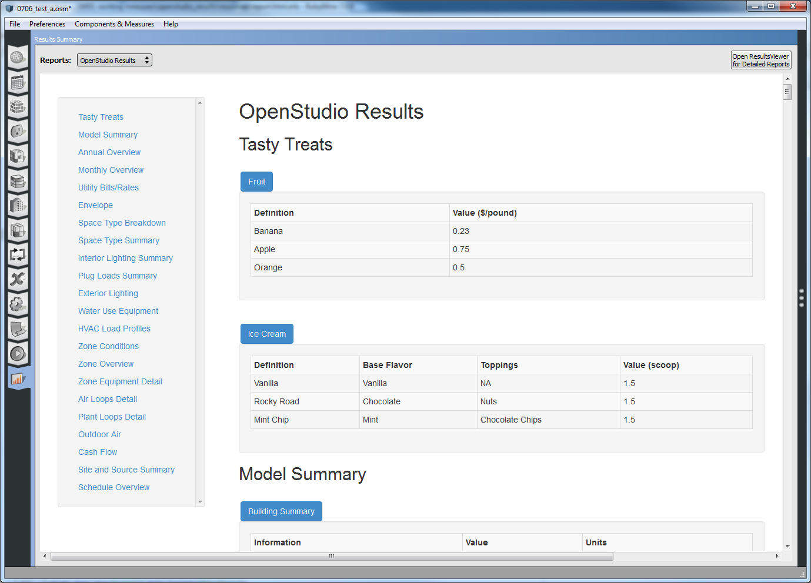
Above: Example section with two tables.
You can write completely custom measure reports that don't look anything like this, and use different html and charting technologies. This framework is just provided as a way to make reports where all you want to worry about is how to get the data you want to see, and not how to generate the HTML code.